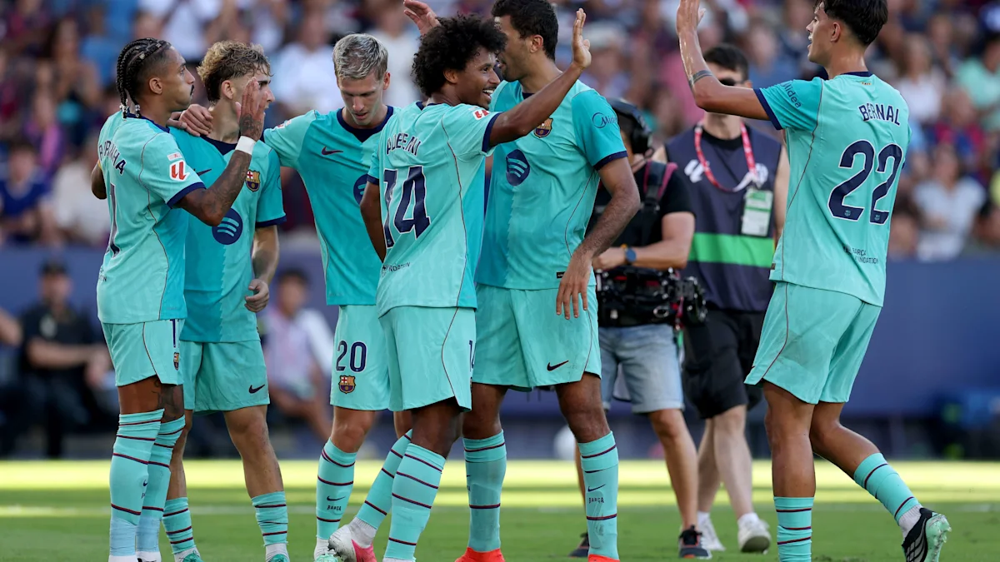

Soccer: Playing and Watching
Soccer is the sport I care about most, both on the field and in front of a screen. I play recreationally and in intramurals at Northeastern, usually on the left wing or in midfield. On the wing I like running at defenders and creating chances, and in midfield I enjoy being involved in every phase of play, from winning the ball back to setting up teammates. Intramurals are also one of the best ways I have found to stay active, meet new people, and take a break from classes.

Photo: FC Barcelona players celebrating a La Liga goal (press photo, used for a class project).
When I am not playing, I am watching FC Barcelona. I enjoy their possession-based style, the young players who come through the La Masia academy, and the energy of big matches like El Clásico. Following the team closely has also made me more interested in the numbers behind the game, such as points, goals, and expected goals, which connects well with what I study in data science.
What I Love About Soccer
- Playing on the left wing and in midfield in intramural games
- The teamwork and quick decision-making the sport demands
- Watching Barça's passing style and La Masia's young talent
- El Clásico against Real Madrid
- Looking at match stats to see how the numbers explain results
Barça's La Liga Points by Season
The chart below shows how many La Liga points Barcelona earned each season from 2018-19 to 2024-25. Gold bars mark the seasons Barça won the league: 2018-19, 2022-23, and 2024-25. The low point was 73 points in 2021-22, the first season after Lionel Messi left the club.
Data source: La Liga final standings, 2018-19 to 2024-25.